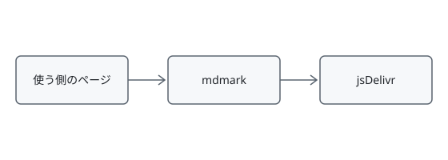
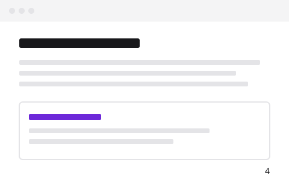

図表の番号
図（画像の題あり）
図（画像の題なし）
表
| 段 | 受け持つもの |
|---|---|
| 印を読む | 印の範囲と引数を決める |
| HTML にする | 記法ごとの HTML を出す |
番号にした参照のリンク
切れた参照（異常シナリオ）
書き方の警告
リンク先の #fig-missing の図表がありません。<!-- fig: missing --> を図か表の直前に書くか、リンク先を直してください。
詳しくは 図 を見てください。
同じ ID を 2 回書いた（異常シナリオ）
書き方の警告
<!-- fig: arch --> の ID arch は、前の図表と重なっています。別の ID にしてください。この図には番号だけを付け、ID を付けていません。
画像だけの段落（fig のマーカー無し。title をキャプションにし、押すと拡大する）
title の無い画像（キャプションを出さない）
サイズ（{width=240} と {width=50%}）
配置（{width=200 align=left}・align=right・align=center）
左に置いた画像の右を本文が回り込みます。プレビューを開くと、Markdown の横に mdmark で描いた文書が出ます。書き換えるたびに描き直し、スクロールの位置もエディタと合わせます。設定ファイルを読めないときは、文書の先頭に帯を出します。
右に置いた画像
右に置いた画像の左を本文が回り込みます。見出しは回り込みの下から始めます。配置を書かない画像は、本文の左端に置き、回り込みません。
中央に置いた画像
nolightbox（{nolightbox}。押しても拡大しない）

ギャラリー（<!-- gallery: cols=3 -->。狭い幅では 2 列・1 列に減らす）
fig のマーカーを付けたギャラリー（サブ図の番号 2a・2b）
暗い配色は 図 2b のとおりです。
テーマごとの切り替え（a.svg#only-light と b.svg#only-dark。上の帯の配色で入れ替わる）
ライトボックスを開いた（上の画像を押すと開き、全体が収まる倍率では ← → で前後へ送り、Esc・閉じる・後ろを押すと閉じる）
3 / 15
幅 240px
ライトボックスで拡大した（＋・－・0 と倍率のボタン。拡大中は移動のボタンが出て、ドラッグ・矢印キーで動かす）
3 / 15
幅 240px
読めない属性を書いた（{width=240 align=top}。異常シナリオ）
書き方の警告
align=top は読めません。配置は left・center・right のどれかを書いてください。ほかの属性（width=240）は当てています。